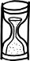

"Her insan başkaları olmak ister, başkaları da o olsun ister" der Ortega y Gasset. "Bir başkasını, kendi olduğumuzdan öte, öteki olmayı, ötekinin varlığıyla da kaynaşmayı arzuladığımız oranda severiz ve gerçekten, ötekinin varlığını kendi varlığımızla bir duyarız." Eğer böyleyse, durmadan birilerine ihtiyaç duyarız; daha doğrusu, illaki birine... sesimizi yankılayacak ve/veya yankımıza ses verecek, taklit edebileceğimiz ve/veya bizi taklit edebilecek birine. Ne var ki bu tutum, çocukluktan itibaren gayet iyi tanıdığımız, mütemadiyen içimizde taşıdığımız bir başka hakikate verdiğimiz tepkidir aslında: yalnızlık! Bu minval üzre devam eder cenabet çağın düşünürü Ortega: "Diş ağrımı, benim yerime çeksin diye bir başkasına devredemem. Bu söylediğim düpedüz ‘malumu ilan' elbette, ama çok verimli bir düşünüş biçimi, insanın yaşamını başka birine devredemeyeceği yani, herkes kendi başına yaşar – ya da aynı kapıya çıkan bir şey, yaşam yalnızlıktır, derin bir yalnızlık." Yalnızdır insan özünde. Ve çoğulluğun aksine, taklit-geçirmez bir zırhla kaplıdır som yalnızlık.
Konferanslarında küçük sorularla adım adım ilerlemeyi seviyordu Ortega y Gasset. Sokratik çıkarsama yöntemleriyle basit ama kafa karıştırıcı sorular sorup, cevapları zaten bildikleri izlenimini uyandırarak öğrencilerinde. Onları düşünmeye kışkırtırken, kendi gibi düşünmeye davet ediyordu bir yandan. Benzer şekilde, döne döne okuduğumuz, sık sık atıflarda bulunduğumuz tüm iddialı düşünürler taklit düğmelerinin hassas ayarlarıyla inceden inceye oynayanlardır; takipçilerini kendileri gibi düşünmeye çeken ama alttan alta taklit edilemeyecek oldukları hissini uyandıran eşikte sallantılı, itibarlı bir denge kuranlar. Edebiyatçılar için de geçerlidir bu. Bir edebiyat yapıtının "başarısı", taklit edilebilir olmak ile taklit edilemez olmak arasındaki eşikte katmerlenir. Okurda, kendisi gibi yazma ön-arzusunu uyandırmaya çalışır yazar ama ne olursa olsun, onun gibi yazamayacağı ard-kabulünü de dayatmak üzere son tahlilde.
Karınca adımlarını önemserdi Ortega y Gasset. Benzer bir yol izleyebiliriz belki de, aforizma taklitleriyle...
1. İnsan kendi kendisiyle baş başa kaldığı somut, sınırlı, sonlu anlarda değil, kendi kendisinden başkası olamadığını kavradığı o soyut, sınırsız, sonsuz zamanda ayırdına varabilir ancak yalnızlığın.
2. Yalnızlığa tahammül edebiliriz etmesine de, bir şartla: Yalnızlık, her yeri eşit şekilde kaplayan bir boşluk gibi dört bir yana akmayı durdurup, sadece (ya da en çok) bize özgü bir hâle gibi etrafımızı kuşattığında.
3. Yalnızlığın, "ben"im yalnızlığım olabilmesi için, varlığından bahsedebileceğim bir benlik sahibi olmaya ihtiyaç duyarım ve bunun için de muhakkak bir "öteki"ne.
4. Bu yüzdendir ki, en kapalı inziva hallerinde en çilekeş münzeviler bile muhakkak bir şekilde ya peygamberlerin, ya ermişlerin, ya şeyhlerinin, ya da bizzat Tanrının suretini görmeye çabalarlar.
5. Taklit hep bir "öteki"nin varlığını gerektirir ve alttan alta, onu, kendinden daha çok sevmeyi. Bu da temelde bir "ben" ve "sen" ayırımı gerektirir.
6. Tanrı, 99 sıfatıyla birlikte, "taklit edilemez"dir. Bu yüzden "ben" ve "sen" ayırımını toptan kaldırarak, "biz" diye hitap eder kutsal kitaplarında.
7. Lav gibidir özne BİZ. Tek ve mutlak bir kaynaktan fışkırdığı halde, sanki her yerden boy vermiş ve her yere aitmişçesine, pervasızca dört bir yana yayılan, yoluna çıkan her şeyi istisnasız, ayırımsız eteklerinin altına alan, kendi dışında bir varlık kalmayıncaya değin tüm bir yaşam alanını kaplayan, yakıcı, kavurucu, fetih tutkunu lav gibi. Tüm yaratma, yok etme, cezalandırma, mükâfatlandırma eylemlerini anlatırken, BİZ diye hitap eder Tanrı.
8. Çocuklarıyla ilişkilerinde birer tanrı olmaya çalışır anneler. "Biz" adına konuşmayı severler. "Acıktık mı?" diye sorarlar mesela. "Bakmayın amcası böyle yaramazlık yaptığımıza, aslında biz çok usluyuzdur" derler ya da. Alınan karar, yapılan tercih tamamen onlara ait olduğu halde, ortada iki ayrı benlik ve bellek (yani çocuk ve anne) değil de, som ve sonsuz bir bütünlük varmışçasına katarlar berikinin (çocuğunun) varlığını kendi varlıklarının hudutlarına.
9. Annelerin çocuklarına karşı kullandığı BİZ'in formülü, (Biz = Ben + Sen) değil, (Biz = Ben + Ben olmayan her şey)'dir. Böyle bir BİZ'in dışında kalmak mümkün değildir.
10. Dışında kalınamayan şey taklit edilemez.
11. Anneler yerlerinin doldurulamazlığını, varlıklarının ulaşılamazlığını gösterebilmek için, taklit edilemez olduklarını hissettirir çocuklarına.
12. Uzun süre bu BİZ haline tahammül edemez modern insan. "Öteki"siz kalmayı taşıyamaz. Som yalnızlık, ruha olmasa da akla ziyandır.
13. Sadece som yalnızlık değil, o son yalnızlık da taklit-geçirmez bir zırhla kaplıdır.
14. Bu saptama, intiharların, bilhassa, başkalarını taklit etmeye pek bir meyyal oldukları varsayılan gençlerin intiharlarının birbirlerininkini taklit ettiği iddiasıyla açıkça çelişir.
15. Hangi intihar söz konusu olursa olsun, yaşamdır taklit üzerine kurulu olan, ölümden ziyade.
İstanbul